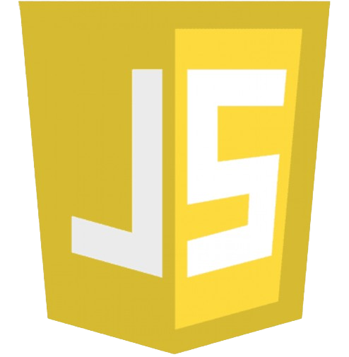

com oque trabalho ?
possuo conhecimentos em HTML CSS, Java Script, Mysql e PHP
HTML-5
O HTML uma linguagem de marcação que eu uso para criar as estruturas do site de forma organizada, e semântica.
CSS

O CSS já uso como um complemento para deixar o site, muito mais bonito, com estilos de fontes, cores sombras e muito mais.
JAVA SCRIPT
O java Script que diferente do HTML e CSS, ela já é uma linguagemde programação, q eu uso, para ter mais interatividade, entre o site, e o usuario final